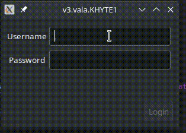

Vala reactive programming: part 2
In the last article we explored how to use properties and bindings to create reactive style programming in Vala. All UI code was written in construct and all logic was represented by setting properties. UI was synchronized with the Widget state by binding properties to child widgets. Although the separation of concerns was nice, the example was too simple. There was only one component (the LoginForm) and no information was neither (i) sent to other components; or (ii) received from other components. In this article we'll create a second form that receives the validated user from LoginForm to a second form.
All the example code for this article is available at the part2 folder in this github repo

Our component architecture will be based on the following principle:
If two components share a parent, then it's the parent's resposability to connect them into a meaningful flow for the application
Let's use this principle to extend the example from the last article and add a UserInfoForm after a succesful sign in. We'll start from the part2/v0.vala file.
Dealing with events inside a component
Events are a place where UI and logic code seems hard to separate. It's quite natural, for instance, to create a login_btn_click event handler that uses both GUI calls to get information from the UI and properties. Fortunately, Vala also provides us with a very nice way of separating this: lambda functions as event handlers.
private void do_login () {
// check database and validate login here
// GUI calls are forbidden here, only properties and other methods can be used
}
construct {
// ....
login_btn.clicked.connect (() => {
// extract all info from the UI using GUI calls
do_login ();
});
}
In the lambda event handler we can extract all info from the UI using GUI calls and then pass this information along to a method. Since we can use bindings to link information between properties and GUI elements, the amount of code inside the lambda event handler can be quite small. In fact, it might only treat the event information and pass it on to a method that uses it. Another interesting point is that lambda can ignore arguments and their types, so if we don't use the GEvent that the handler is supposed to receive we can just ignore it in our declaration.
This has two advantages:
do_logindoes not receiveGtk.Event(or similar), which means it can be called from anywhere in the code, not only in response to an user generated event.- Event handlers often receive different arguments depending on which event they handle. The
lambdahandler is used to treat this arguments, sodo_loginis not tied to a single type of event.
Sending information out
For sending information out of our components we can use signals. For instance, upon succesful login our LoginForm could emit a login_succesful signal that sends a User instance with the currently logged in user info. Now it's up to the parent of LoginForm to receive the signal and connect it to the next part of the application flow.
First we modify LoginForm. For now our User class only contains the username property. Also, username is can only be assigned when creating an User instance.
class User : Object {
public string username { get; construct; }
public User (string username) {
Object (username: username);
}
}
class LoginForm : Gtk.Grid {
public signal void login_succesful (User u);
// ....
private void do_login() {
login_succesful (new User (username));
}
}
Then we receive this information in our Application class:
class Application : Gtk.Application {
protected override void activate () {
var win = new Gtk.ApplicationWindow (this);
var login_form = new LoginForm ();
login_form.login_succesful.connect ((u) => {
print ("%s\n", u.username);
});
win.add (login_form);
win.show ();
}
}
The complete code is shown in part2/v1.vala.
Intermission: Application mixes UI and logic
Our Application class is not following the principles outline in the last article. Let's fix that while we add a new Gtk.Stack to hold our new HelloForm.
class HelloForm : Gtk.Grid {
construct {
expand = true;
valign = Gtk.Align.CENTER;
halign = Gtk.Align.CENTER;
var label = new Gtk.Label ("Hello (username goes here)");
attach (label, 0, 0);
}
}
Instead of creating widgets inside Application we introduce a ApplicationWidget, a class with the sole purpose of creating the workflow of data between our components. Our first version is shown below.
class ApplicationWidget : Gtk.Stack {
construct {
// ...
var login_form = new LoginForm ();
add_named (login_form, "login_form");
var hello_form = new HelloForm ();
add_named (hello_form, "hello_form");
visible_child_name = "login_form";
}
}
The complete code is shown in part2/v2.vala. Our application works exactly the same as before, but now UI is separated from the rest of the app in Application as well.
Receiving information from other components
For receiving information from the "outside" worlds we have two options: regular instance methods or public properties. The advantage of using instance methods is that they can be directly connected to other components' signals. However, we must take care of only updating properties inside it so we don't mix UI and logic. We can also use public properties to receive data from the "outside world".
- Use methods if something besides updating the UI is necessary (i.e. pulling information from the database or the web)
- Use properties otherwise
We add a user property to HelloForm so it can receive the currently logged in user. We then connect the components in our ApplicationWidget:
class HelloForm : Gtk.Grid {
public User user { get; set; }
// ...
}
class ApplicationWidget : Gtk.Stack {
construct {
// ...
login_form.login_succesful.connect ((u) => {
hello_form.user = u;
visible_child_name = "hello_form";
});
}
}
The final part of this is to connect a change in HelloForm.user with the UI. A first could be creating a binding between user.username to the label text. This won't work, as we are not changing the username property of user, we are overwritting the whole user object. Our binding must reflect that and listen to changes on the entire user object.
Up until this point we only used bindings with the same source and target type. GObject also allows transformation bindings, in which we bind properties with different types and provide a function to transform on type into the other.
class HelloForm : Gtk.Grid {
public User user { get; set; }
construct {
// ...
bind_property ("user", label, "label", BindingFlags.DEFAULT, (binding, srcval, ref targetval) => {
var user = (User) srcval.get_object ();
targetval.set_string("Hello, %s!".printf (user.username));
return true;
});
}
}
Transformation functions receive GLib.Value, so we need to convert to the type of objects we need. Now our HelloForm reacts to a change in the application state in a complex way. And this concludes our experimentation with "reactive" Vala and GTK+.
I personally like this style of code much more than what I usually read in desktop GUI applications. What do you think? You can send comments here.
If you liked this post consider buying me a coffe and/or following me on twitter at @igor_montagner.